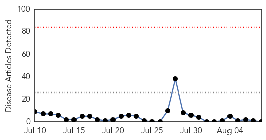
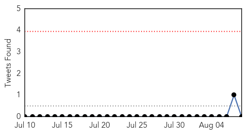
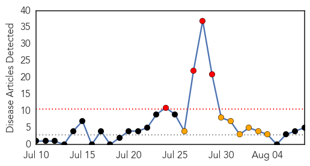
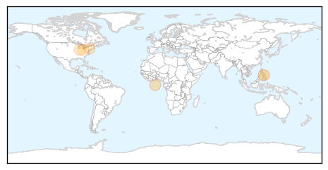
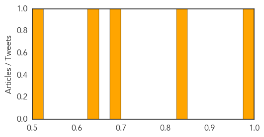

MERS
30-Day Web Trend
0 alerts, 0 warnings

30-Day Twitter Trend
0 alerts, 0 warnings

Article Locations

Article Confidences

Top Articles:
-
No articles found for Aug 08, 2015
Top Tweets:
-
No tweets found for Aug 08, 2015
Hepatitis
30-Day Web Trend
4 alerts, 7 warnings

30-Day Twitter Trend
1 alerts, 0 warnings

Article Locations
Article Confidences
Top Articles:
- 0.991
- Philippines Reportable Diseases update for 2015: Diphtheria doubles, measles way down
- 0.849
- Georgia Health District advises for vaccinations this month
- 0.680
- IPFW looks to get more students HPV vaccination
- 0.640
- Hepatitis increasingly goes hand in hand with heroin abuse; cases skyrocketing in US
- 0.515
- Increase of hepatitis goes hand in hand with heroin abuse - Times-Gazette
Top Tweets:
-
No tweets found for Aug 08, 2015